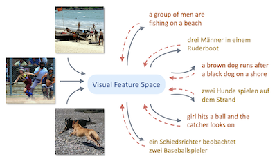
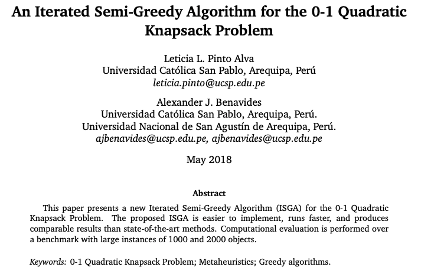

|
I am a phD student at the University of Southern California, advised by Prof. Jesse Thomason. Before that, I was a visiting student at vislang@ the Universiy of Virginia, where I was advised by Prof. Vicente Ordóñez. I did my master in Computer Science at San Pablo Catholic University, advised by Prof. Edward Cayllahua. Previously, I received my bachelor's degree in Computer Science from National University of Engineering. My research interests are in computer vision, natural language processing, and machine learning. |
{kind=link}

|
Leticia Pinto-Alva,Ian K. Torres, Rosangel Garcia, Ziyan Yang, Vicente Ordonez. [code] [arxiv] Arxiv, 2021 |
|  |
Ziyan Yang,Leticia Pinto-Alva, Franck Dernoncourt, Vicente Ordonez. Findings of Empirical Methods in Natural Language Processing. Findings of EMNLP 2020. short. Accepted September 2020. [project page] [code] |
|  |
Leticia Pinto-Alva, Alexander J. Benavides, CLAIO 2018: XIX Latin-Iberoamerican conference on operations research. |
|
|
|
Reviewer, WACV 2021
Reviewer, EMNLP 2021 Reviewer, WACV 2020 |
|
Website borrowed from here, |